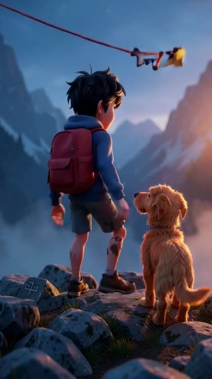

Pipeline vertical narrado, com provedor de imagem e de vídeo escolhível por parâmetro — e um contrato em YAML que você confere antes de gastar.
A diferença entre um filme e um slideshow está na decupagem: cada plano sabe o seu enquadramento, o seu movimento e onde o gesto termina. É isso que o videoanima escreve antes de gerar qualquer imagem.
Enquadramento, ângulo, movimento, velocidade, look e ritmo viram fragmentos de prompt — vocabulário destilado de uma análise de estilo, não adjetivos improvisados.
Imagem em agnes, inemaimg ou kie; vídeo em agnes, kling, klingai ou kie. Cada armadilha medida mora no adaptador dela.
Cada clipe é medido depois de gerado; o que sai parado é refeito. Há negative prompt contra still frame e keyframes A/B para o gerador ter o que animar.
O pipeline roda ponta a ponta, mas está em ciclo aberto de correção a partir dos filmes que ele mesmo produziu. O primeiro corte saiu ruim (cenas paradas, personagem inconsistente, narração picotada) — o que foi medido e o que mudou por causa disso está no post-mortem doc/pos-mortem-montanha-leao.md. Ainda em aberto: a narração estica os planos além do ritmo planejado, os SFX entram sem audição prévia, e a referência encadeada entre planos (plano N usando o N−1) não foi implementada.
Tudo mora no output: um id solto resolve para ~/projetos/output/videoanima/<id>/decupagem.yaml. O historias/<id>/ do repo é só semente — na primeira execução a decupagem é copiada para o output, e a de lá passa a ser a viva.
A sanidade de ritmo roda primeiro e o preview de custo aparece antes da primeira chamada paga. --so-decupagem valida sem gerar nada.
Uma âncora vai em text2img e as demais derivam dela por img2img — gerar em paralelo produziria indivíduos diferentes, porque nenhum desses geradores tem seed de identidade.
Slow e speed-ramp, handheld, zoom-punch, trilha com ducking, SFX e loudnorm entram na montagem, em ffmpeg.
Python 3 e ffmpeg são obrigatórios. Os serviços locais e as chaves dependem dos provedores que você escolher.
A montagem inteira é ffmpeg. Sem ele o filme não fecha.
# confira ffmpeg -version python3 --version
TTS local em localhost:8010, engine chatterbox. A voz vem da decupagem (voz:).
# precisa responder curl localhost:8010/health
Servidor de imagem local em localhost:8000. Necessário para --img inemaimg — o caminho para personagem criança, que cai no filtro da Agnes.
# só se for usar --img inemaimg curl localhost:8000/health
LLM local em localhost:11434, usado pela decupagem automática (decupagem_llm.py).
# só para decupagem via LLM curl localhost:11434/api/tags
Lidas em runtime dos .env do ecossistema — nada é copiado para o repo.
# AGNES_API_KEY, KIE_API_KEY, FAL_KEY # em ~/projetos/openpcbotv2/.env # ou ~/projetos/wifi/.env
klingai e kie precisam do keyframe numa URL pública — combine com --img agnes ou --img kie.
# combinação válida --img kie --video klingai
Todos os comandos rodam da raiz do repo. A ordem importa: valide o ritmo e o custo antes de qualquer chamada paga.
Roda a sanidade de ritmo e mostra o preview de custo. Não gera imagem, clipe nem áudio.
python3 rodar.py exemplo --so-decupagem # valida ritmo + custo, não gasta
A primeira execução copia a semente do repo para o output. A partir daí, edite a do output — é ela que vale.
# semente no repo (só a primeira vez) historias/exemplo/ # a viva, que você edita ~/projetos/output/videoanima/exemplo/decupagem.yaml
Gera as âncoras de personagem e os keyframes A/B, monta a folha de contato e para. É onde se pega personagem inconsistente antes de pagar pelos clipes.
python3 rodar.py exemplo --so-imagens
Escolha os provedores de imagem e vídeo. O padrão de ambos é agnes (custo US$ 0, submissão em lote).
python3 rodar.py exemplo --img agnes --video agnes # Kling via fal.ai, com keyframe em URL pública python3 rodar.py exemplo --img kie --video klingai
Medido em 2026-08-01: a Agnes devolve HTTP 400 de forma determinística para "boy"/"child" — o mesmo prompt com adulto passa.
python3 rodar.py minha-historia --img inemaimg --video agnes
--sim não pergunta antes de gastar. --prompt-minimo manda só a ordem de movimento ao gerador de vídeo — útil quando o prompt longo está atrapalhando a animação.
python3 rodar.py exemplo --sim --prompt-minimo
Cada etapa pula o que já existe em disco. Apague o artefato que quiser refazer e rode de novo — só ele é regerado.
# refaz só o clipe do plano 07 rm ~/projetos/output/videoanima/exemplo/clipes/p07*.mp4 python3 rodar.py exemplo
Quadros dos filmes verticais produzidos durante o ciclo de correção — os mesmos que alimentaram o post-mortem.

tipo_plano e a bíblia de ambientes; o plano de estado não vai a gerador nenhum.O roadmap é dirigido pelos defeitos medidos nos próprios filmes — cada item nasceu de um corte que saiu errado.
still frame e um portão que mede o movimento do clipe e refaz o que sair parado.tipo_plano: tableau não vai a gerador de vídeo — a câmera se move sobre a imagem parada. blocos pinta a faixa de planos com o look certo, em vez de os 50 planos herdarem um "daylight" global.